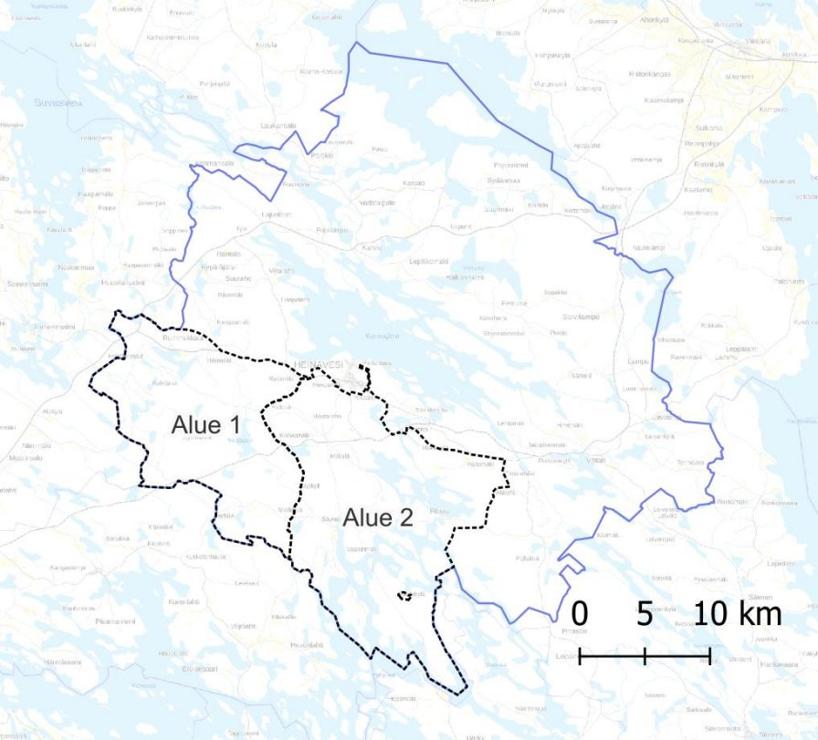

Siirry sisältöön
Palvelut
Yritys
Kokemus
Yhteystiedot
Kaava-alue · Heinävesi
Heinäveden läntisten alueiden rantayleiskaavamuutos
Suunnittelualueen rajaus kartalla.
← Takaisin projekti-sivulle

Suunnittelualueen rajaus on esitetty kartassa mustalla katkoviivalla. Malkkilantie jakaa suunnittelualueen kahteen osaan (Alue 1 ja Alue 2). Heinäveden kunnan rajat ovat kartassa sinertävällä.
← Takaisin projekti-sivulle